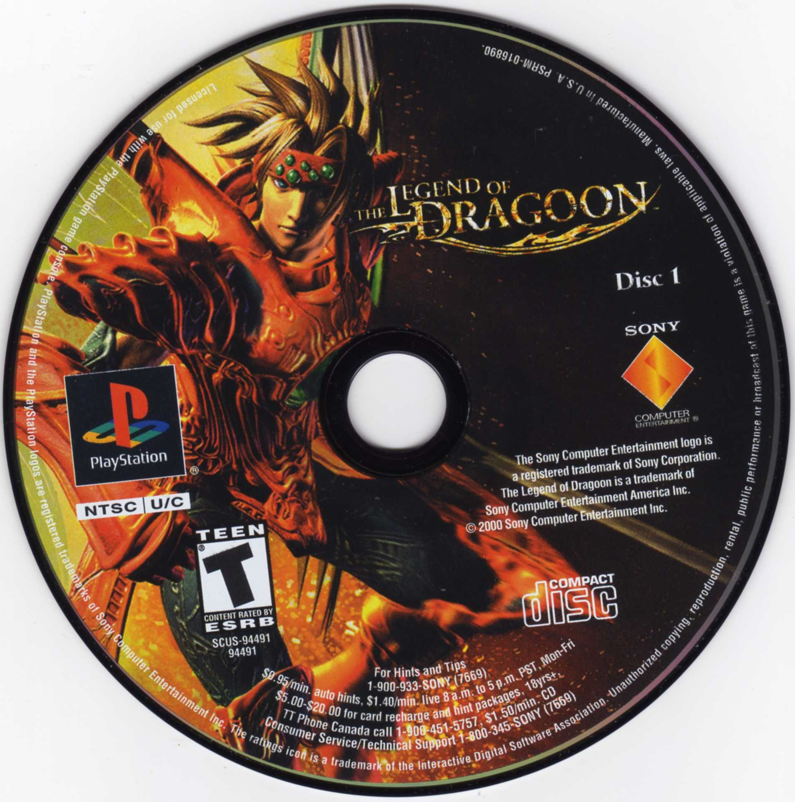
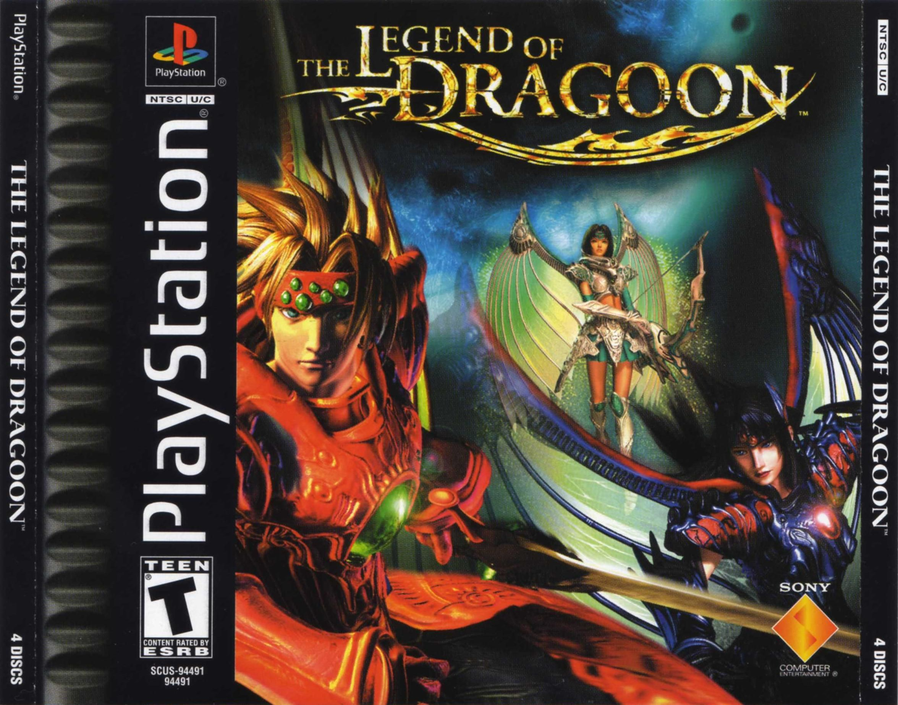
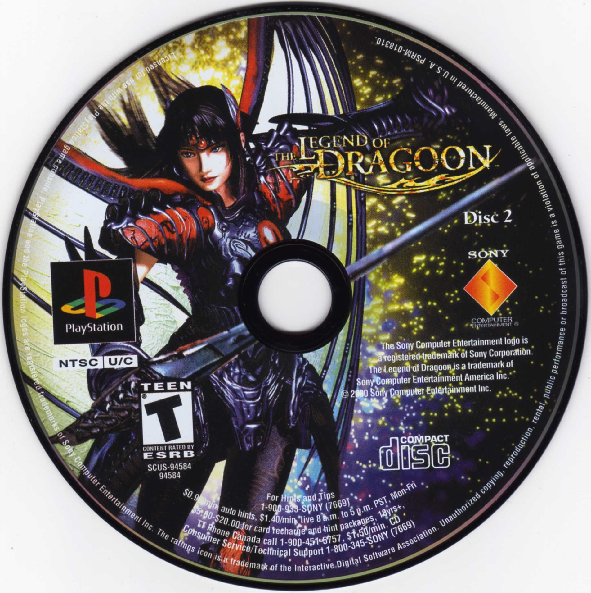
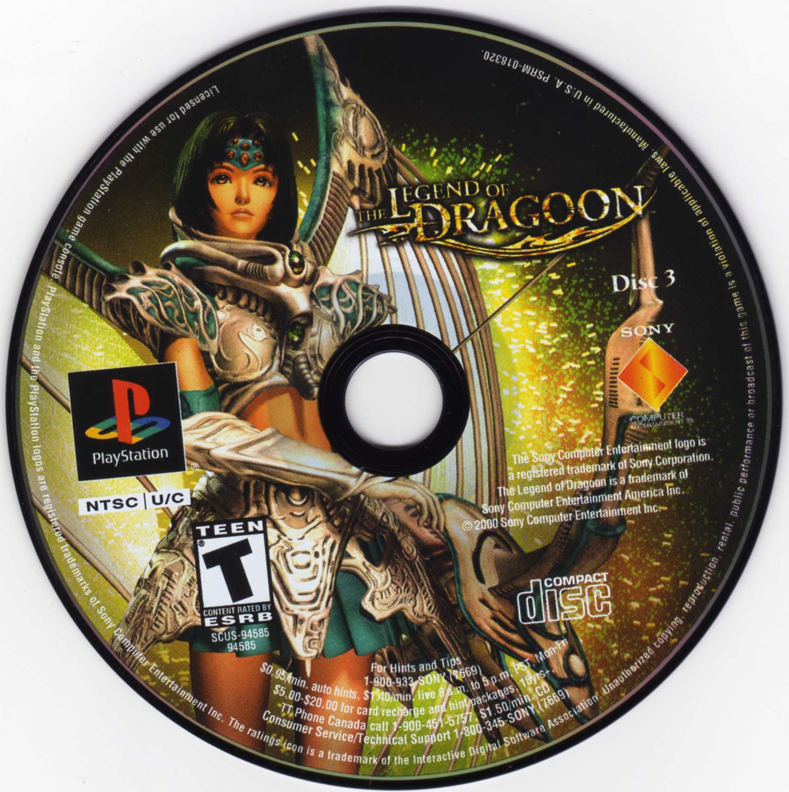
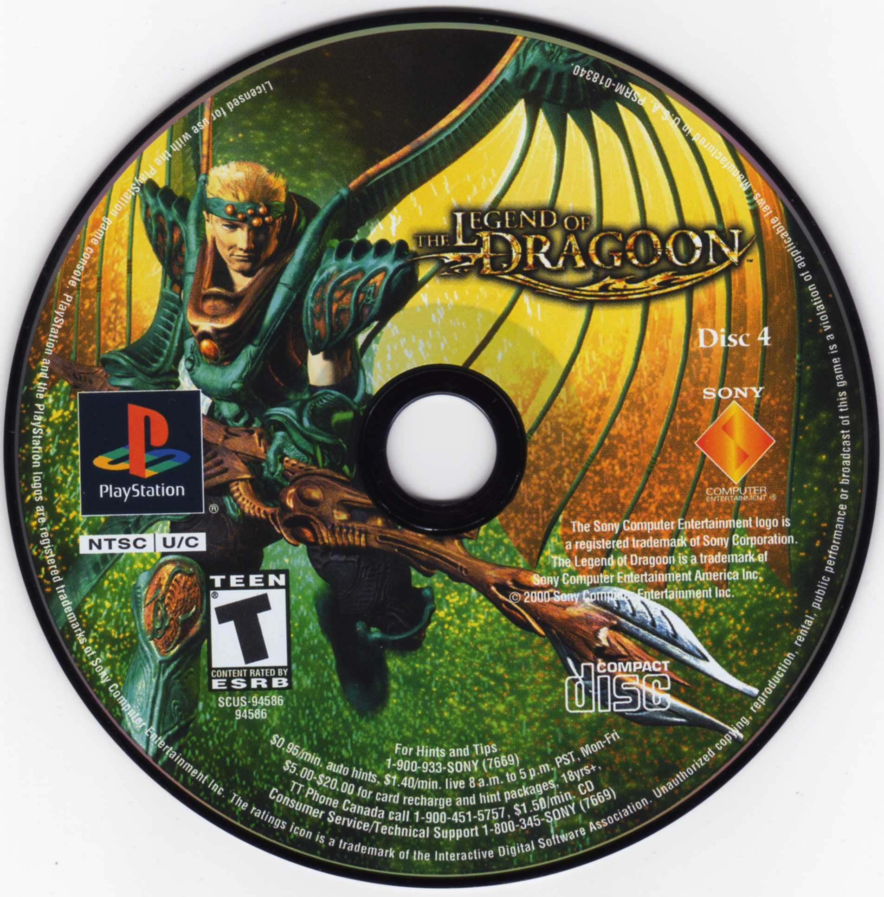

Primeiro disco
CD 1
Andamento em reavaliação

Tradução brasileira para PlayStation
Meu jogo favorito de PS1 está ganhando vida em português. Estou revisando o trabalho já feito com base na versão japonesa; o patch do CD 1 foi retirado enquanto preparo essa nova etapa.
Aviso sobre o patch
Ao trabalhar no CD 2, percebi que a tradução da versão americana traz muitas adaptações que deixavam algumas passagens pouco naturais em português. Por isso, retirei o patch anterior do CD 1 e estou revendo o conteúdo já traduzido com base na versão japonesa.
Não há patch de The Legend of Dragoon disponível para download no momento. Uma nova versão será publicada depois da integração, da revisão dos diálogos e dos testes.
Projeto em andamento
A revisão do conteúdo já traduzido com base na versão japonesa está na fase de integração. Antes de retomar os diálogos, ainda preciso revisar as falas das batalhas e a cena de introdução. Os percentuais anteriores por CD foram retirados enquanto reavalio o andamento desta nova versão.
Última atualização:

Primeiro disco
Andamento em reavaliação

Segundo disco
Andamento em reavaliação

Terceiro disco
Andamento em reavaliação

Quarto disco
Andamento em reavaliação
Próximos passos
Coerência com o áudio
Essas partes têm narração em inglês. Usar o japonês como referência nelas poderia deixar o texto e o áudio incoerentes. Alguns nomes de magias e combos também precisaram de adaptações por causa do limite de caracteres do jogo.
A dublagem não está disponível neste projeto por falta de recursos.
Capturas de uma etapa anterior
Estas capturas mostram uma etapa anterior do projeto. Textos e nomes exibidos nelas podem mudar após a revisão atual.
Clique em uma imagem para ampliar.
Ajude na revisão
Se você jogou com uma versão anterior do patch, ainda pode enviar uma captura de tela e explicar onde encontrou o problema. O formulário continua aberto para esses relatos, mesmo com o download pausado.
◇ Os relatos serão privados e não aparecerão publicamente no site.